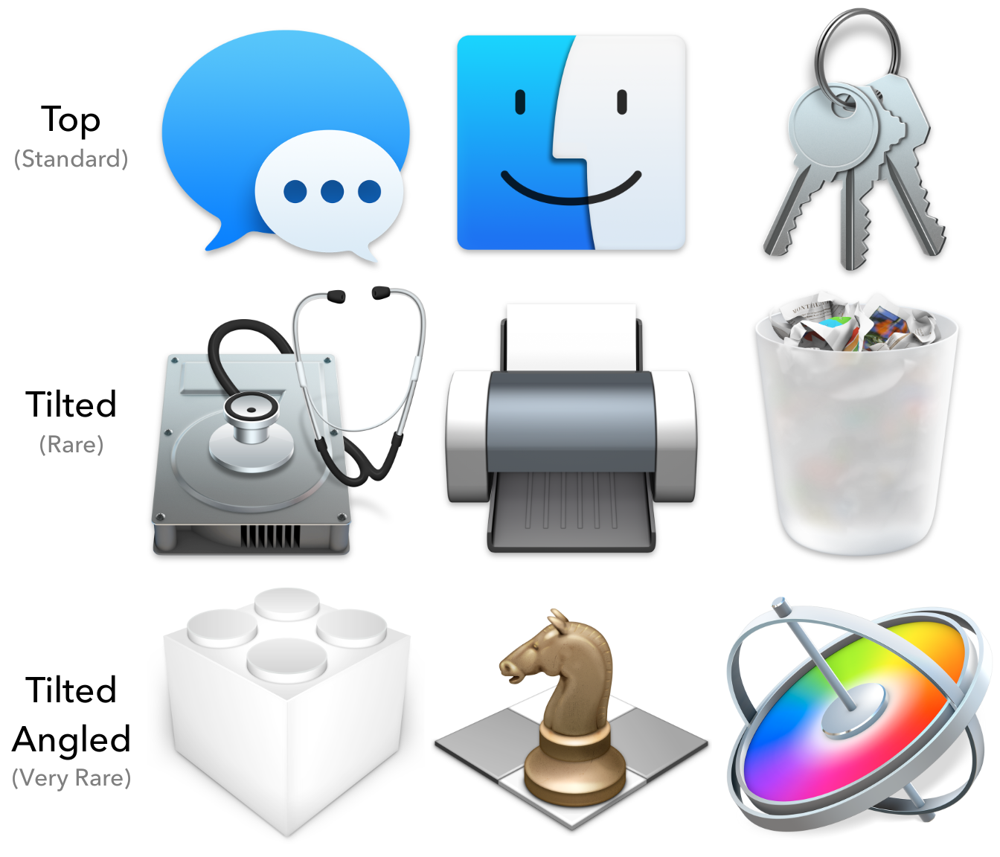

Apple uses four important conventions to represent an Application's basic structure in the design of its icon:
This article will familiarize you with these four conventional icon types, and give you a solid understanding of which one to use for your App. Each section also includes a grid template to assist in drawing icons of that type.
Download All Grids + TemplatesThe final section explains how to build beautiful App icons that don't use the conventional structure for their App type, but still look at home on macOS.
1. Objects: Apps that do things
Tilted object icons represent self-contained Applications that perform a task while they are running, and stop performing that task when they stop running.
The common trait of these Apps is that they have a state, not an output. The user doesn't have to think about opening or writing files; they just launch the App, work for a bit, and quit the App once they're done.
Project-focused studio Apps like iMovie and Logic also fit into this category.
Objects in these icons are tilted 9° along the z axis, and the camera is rotated 15° down from center along the x axisThere is also a very subtle horizontal camera tilt of ~2.6° in the stock icons..
Object Icon Grid.png Object Icon Template.blend2. Tools: Apps that create things
Tools tilted on top of files represent Applications that enable the user to create or modify files.
The common trait of these Apps is that they can only perform their function while they are operating on a file. If no file is currently being edited, all controls (besides those related to file creation) are inactive or hidden.
Files in these icons are tilted 9° along the z axis, tools are rotated -16° and located right of center, and the camera is rotated 15° down from center along the x axisAgain, there is also a slight horizontal camera tilt of ~2.6° in the stock icons..
Tool Icon Grid.png Tool Icon Template.blend3. Browsers: Apps that present things
Disks with glyphs inside represent Applications that allow you to browse through and view third-party content.
The common trait of these Apps is that they cannot create content, but they allow the user to view content which originates from external sources.
Browser icons are circular and viewed from directly above. The glyph inside the disk is symbolic of the type of content the App presents.
Browser Icon Grid.png4. Utilities: Apps that configure things
These Applications allow the user to interact with and configure their operating system.
Icons for Utilities that let you interact with things are bordered metal with a central display, while icons for Utilities that let you configure things are solid metal with exposed portions in the center.

Utility icons are rectangular and viewed from directly above.
Utility Icon Grid.png5. Breaking Conventions:
If your icon metaphor isn't working in the conventional perspective for its type, you can use one of these options. They don't have strong symbolic associations, but they are still perfectly acceptable icon structures in macOS:
Here are some tips for making an unconventionally-structured icon look as natural as possible:
- Use a very high focal length (~500mm). This is a convention in all macOS icons that helps icons look better in groups. If you're working without 3D software, start with an orthogonal design and adjust it slightly to add perspective.
- Properly fill the canvas so your icon doesn't look too small (or too big) around other icons. This will sometimes require rounding off shapes or approaching the upper edge of the canvas. Never approach the bottom edge of the canvas too closely; save some space for your drop shadow.
- Limit your icon to one or two distinct structural components, with a maximum of three. If your icon includes more than three components, consider how you can simplify your icon while retaining meaning.
If you or know someone you know at Apple can a) confirm/refute my value of 500mm for the Focal Length or b) explain the ~2.6° horizontal camera tilt in Object/Tool icons, please let me know!